内容导航
2个月 (2024年春季)
学习设计
概念原型开发
UI设计
学习实现目标所需的知识、技能和动力
导师： Stacie Rohrbach
团队： Sherry Wang

概述
一款能传达信息的智能AI代理
PlanPal是一款AI驱动的学习工具，旨在帮助个人学习如何设定和实现个人目标。PlanPal以个性化指导和激励为核心，引入了一队由4位AI教练组成的团队——龙师傅、弗兰基、小爪和幽灵，他们各具独特的互动风格和激励手段，满足用户多元化的需求和偏好。PlanPal借鉴了多种学习理论(如支架、反馈、注意力、记忆等)，并基于一套全面的学习模型进行设计。
角色
学习设计/概念原型开发
作为两人团队的一员，我的工作涵盖从研究到构思再到设计：
-
学习体验设计：通过确定学习目标、创建分层内容以及设计互动活动，打造引人入胜的学习体验，为有效的目标设定和实现提供支持。
-
概念原型开发：利用Figma开发交互式原型，展示PlanPal的核心功能和用户流程，支持迭代测试并完善学习设计。
-
用户界面设计：设计直观且视觉吸引的用户界面，与PlanPal品牌形象保持一致，提升整体用户体验，确保导航简单且内容表达清晰。
1. 激发动力，学习知识，携手个性化教练圆梦想
PlanPal是一款AI驱动的学习工具，旨在彻底改变个人设定和实现个人目标的方式。PlanPal以个性化指导和激励为核心，引入了一队由4位AI教练组成的团队(龙师傅、狮子弗兰基、小狗爪爪和幽灵喃喃)，他们各具独特的互动风格和激励手段，满足用户多元化的需求和偏好。凭借先进的AI技术，PlanPal提供量身定制的反馈、进度跟踪和自适应学习体验，让用户保持投入和决心，直至实现目标(例如健身塑形)。
动机类型测评
PlanPal通过个性化评估，帮助用户发现自身的独特动机类型，从而为系统提供个性化的指导和支持。
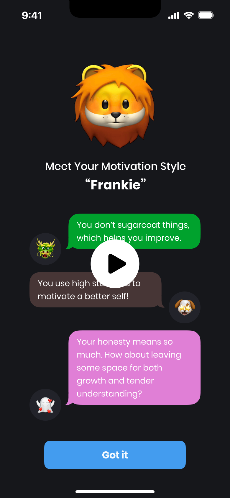自我评估
用户完成自我评估，了解当前的健身水平，PlanPal据此为他们量身打造适合的健身之旅起点。
制定SMART目标
PlanPal指导用户制定具体、可测量、可实现、相关、有时限的SMART目标，确保目标明确且切实可行。
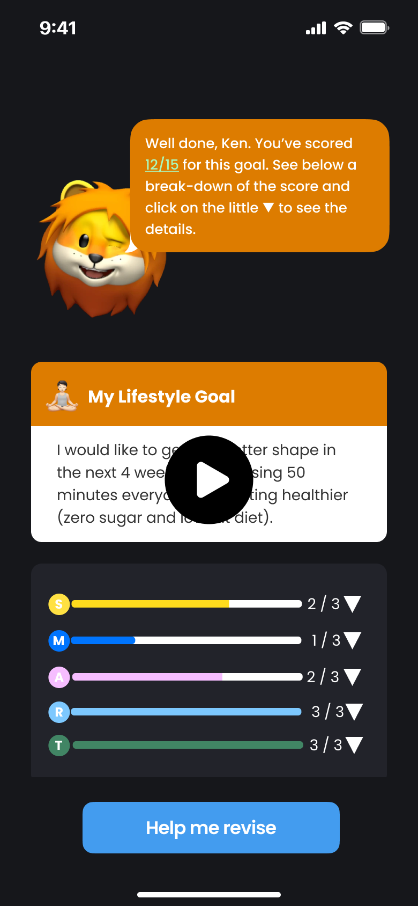目标分解
"进度追踪星系"功能将用户的SMART目标可视化地分解为更小、更易管理的阶段性目标，将目标可视化。
目标跟踪
用户可以轻松在"进度追踪星系"中监控日常进展和任务，助力保持专注和问责。
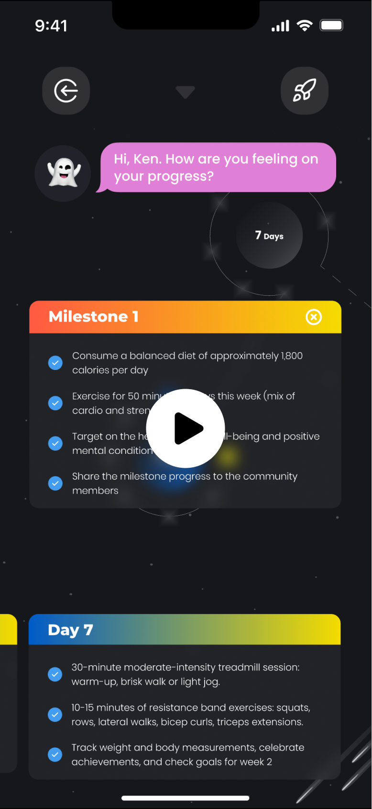进度日志
用户可以记录进度，并通过专属的群聊功能与AI教练展开激励对话。
社区互动
社区环节让用户可查看好友的进度，并参与互评，营造协作互助的良性氛围。
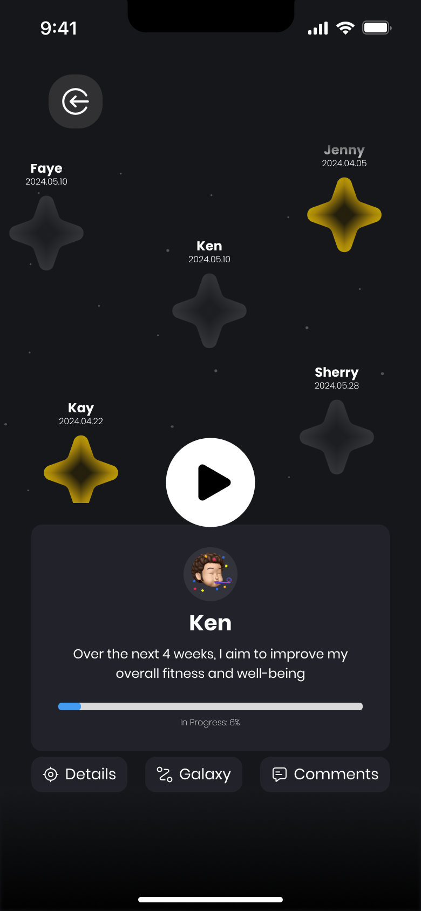每日挑战
PlanPal每日为用户准备检验题，加深知识印象、促进反思并培养进取心态。
每周邮件
给用户发送周总结邮件，汇报进度并回顾关键学习成果，持续提供动力和反思契机。
通知/小工具
利用通知和小工具及时发送提醒、更新和鼓励，确保用户持续投入并坚持目标。
发现之旅
学习者可随时快速访问有助于但非必需的补充资料，自主决定深度学习的进度。
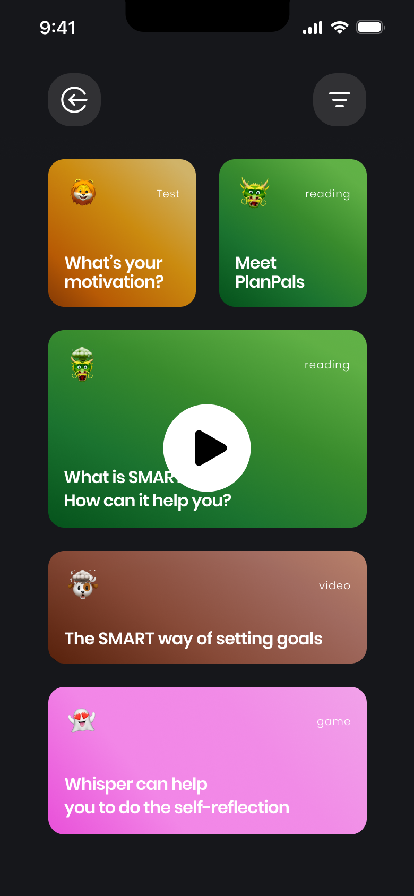快速参考
屏幕上随时可见SMART框架快速参考，方便回顾制定SMART目标的关键要素。
2. 新年新目标，可惜总也坚持不下去
问题所在：人们难以朝着长期目标前进
许多人都难以坚持新年的决心，尤其是与健身和健康相关的决心。这个常见挑战可归咎于几个学习缺口，包括缺乏适当的目标设定技巧、难以保持动力，以及对实现长期目标的有效策略知识有限。这些学习缺口影响了广泛的利益相关者，从年轻人到上班族和退休人员，他们虽然一开始热情高涨、决心坚定，但最终还是未能实现健身目标。
我们的受众和背景：有健身目标的人群
我们发现健身在美国已成为文化现象。人们普遍会为自己设定健身目标。所以我们决定以设定健身目标为切入点。
通过对4名不同健身知识和经验水平的学习者进行结构化访谈，我们发现：身兼多职的学生虽然健身知识丰富，但由于时间紧张和其他优先事项而难以执行;适应型健身爱好者则更加灵活，不拘泥于严格的时间表;坚定的健康追求者如果没有看到快速效果就会沮丧;而健身新手自认坚持是最大挑战。这些见解凸显了创建个性化学习体验的重要性，满足每种用户画像的独特需求和挑战，为他们提供有效设定和实现健身目标所需的工具和支持。
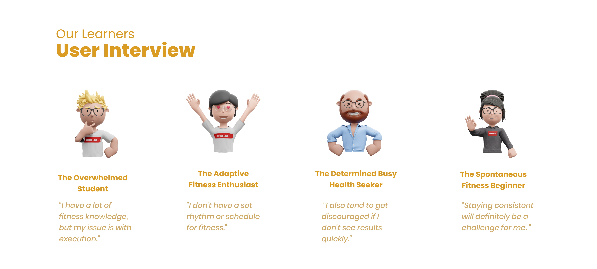我们的学习者人设Ken代表了目标受众。Ken是一名职场精英，对自己要求很高，但通常在未能实现健身目标时感到失望。这极大影响了他的继续动力，而他繁忙的工作安排和拖延习惯又使他难以保持专注，无法持续取得进展。我们选择聚焦健身领域，是因为这是众多个人感兴趣的常见领域，而Ken所面临的挑战也反映了目标受众群体的普遍现状。
主题意义重大：为什么选择健身?
学习如何制定和实现健身目标对于改善身心健康至关重要。身心健康状况不佳会带来一系列负面后果，包括患慢性病的风险增加、生活质量降低以及医疗费用增加。通过帮助Ken等人培养有效的目标设定技能，我们可以赋予他们掌控健康的能力，从而获得更好的长期效果和更高的生活质量。
有效的目标设定技能为个人的健身之旅提供了方向、动力和目的感。缺乏明确目标会使人难以衡量成功，也无法在必要时调整策略，这可能导致沮丧并最终放弃健身活动。
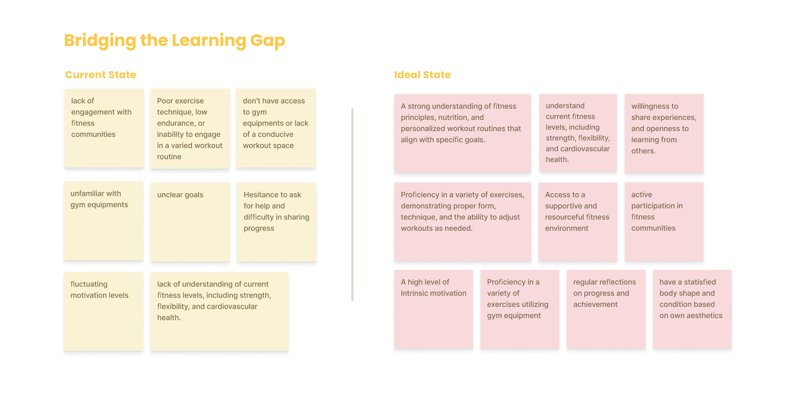我们的目标：帮助学习者设定并实现健身目标
我们项目的主要目标是开发一款AI驱动的学习工具PlanPal，以解决上述发现的学习缺口。我们旨在创建一款移动应用程序，提供个性化的指导和支持，帮助用户设定并实现健身目标。通过利用AI技术和循证学习策略，我们致力于打造吸引人且高效的学习体验，赋予个人在健身之旅中取得长期成功所需的技能和知识。我们的终极目标是对用户的生活产生深远影响，帮助他们克服新年决心难以坚持的常见挑战，实现健康福祉目标。

3. 设计理念源自学习科学的智慧
PlanPal巧妙融合了CCAF(Context、Challenge、Activity、Feedback)框架、4MAT系统和魔法圆理念，打造出引人入胜且卓有成效的学习体验。
CCAF框架是PlanPal设计的主干。PlanPal以普及的健身领域为背景，为目标设定提供了相关语境。用户会被指导制定SMART目标，这为他们带来适度挑战。PlanPal通过互动活动和AI教练的个性化反馈吸引用户参与，确保个性化的学习体验。
PlanPal融入了4MAT系统，通过提供多种内容格式和互动模式来满足不同的学习风格，从而保持用户参与度并增强动力。
PlanPal利用魔法圆理念打造了一个身临其境的学习环境。通过提供一个纯净的世界，让用户在摆脱现实世界的干扰下追求健身目标，PlanPal鼓励专注、尝试和探索。这个魔法圆让用户能够发展出在现实世界实现目标所需的技能和知识。
PlanPal还吸纳了其他学习理论，以提升效果和用户体验。
PlanPal采用了动机原理来保持用户投入和动力。PlanPal的个性化反馈和PlanPal的鼓励发挥了动机中的期望和价值两大要素，帮助用户相信自己能够成功，并认识到目标的重要性。
PlanPal的设计还借鉴了实践与反馈循环。PlanPal的每日挑战题和进度日志功能为定期实践提供了机会，而AI教练和每周进度邮件则提供了及时反馈。这个持续的循环加强了知识印象，助力用户完善目标设定技能。
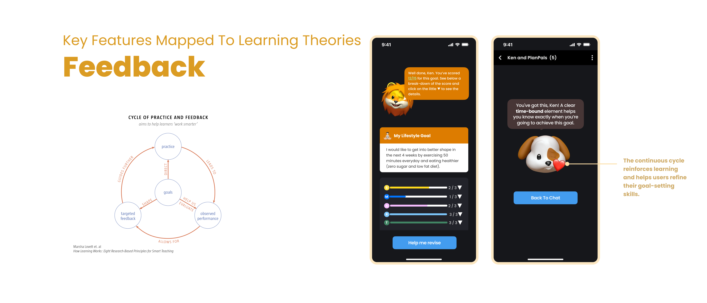支架学习曲线是PlanPal设计的另一关键方面。PlanPal通过"进度追踪星系"等功能，将复杂的目标设定过程分解为更小、更易管理的步骤。这种支架方法为用户逐步发展技能和知识铺平了道路，绘制出通往精通的明确路径。
PlanPal还融入了学习流动模型，让用户保持最佳的参与状态。PlanPal的"发现之旅"功能和SMART框架快速参考，让用户可以平衡自身技能与当前挑战，避免厌倦或沮丧。
PlanPal的设计贯彻了理解的六大面向。PlanPal鼓励用户解释和诠释目标、应用目标设定策略、考虑不同视角、与社区中的他人共情、通过反思和进度跟踪发展自我认知。
PlanPal也考虑到了学习者的多元性。"发现之旅"环节让新手学习者可以访问补充信息，而有经验的用户则可直接进入目标设定与跟踪。应用程序的通知和小工具也提供了推送和拉取信息的混合模式，满足不同学习者的偏好。
通过将这些学习理论融入设计，PlanPal打造出全面而有效的学习体验，支持用户设定并实现健身目标。
4. AI真的有用吗?用户测试和成果解析
为评估PlanPal的效果和用户满意度，我们对6名参与者进行了前测/后测、利克特量表调查和用户访谈研究。结果表明，PlanPal的AI驱动功能植根于学习理论和原理，成功支持了用户设定并努力实现健身目标。
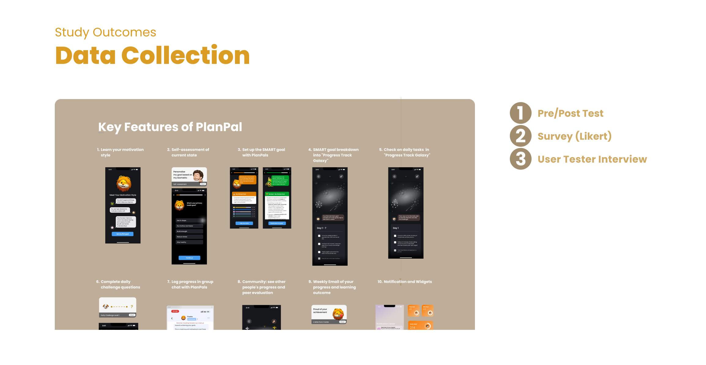前测/后测并未显示出参与者对目标设定概念(如SMART框架)的理解有显著提高。我们推测这可能是由于测验题目质量和数据点稀缺所致。
调查数据显示，对于目标设定和激励最有帮助的功能是"了解你的动机类型"、"自我评估当前状态"和"将SMART目标分解到'进度追踪星系'中"。PlanPal获得了高度总体评价，在"向他人推荐PlanPal的可能性"这一项上平均得分为5分满分中的4.67分。用户还给予PlanPal在"使长期目标更易实现"这一项上4.5分的平均分数(满分5分)。
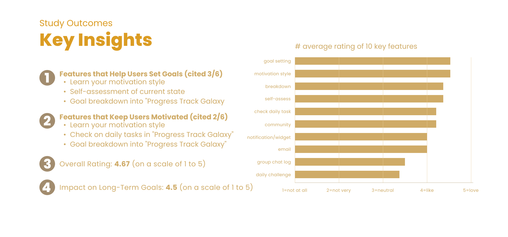用户访谈提供了定性见解，参与者对个性化指导、互动式目标设定过程和社区意识表示赞赏。他们还提供了建设性反馈，如希望有更多样化的内容格式，以及为了问责制和支持而潜在的社交功能。
5. 反思：在AI时代学习新体验
更有效的用户测试
展望未来，研究PlanPal效果的下一合乎逻辑的步骤将是实施前测/后测，采用简答题和评分标准来衡量学习收获。这一过程将更清晰地揭示PlanPal对用户目标设定和实现相关知识技能的影响。
扩展至任何领域的目标设定
PlanPal所采用的设计方法具有广泛的影响和应用前景，不仅限于健身领域。其中运用的原理和策略可以调整以支持各个领域的目标设定和实现，诸如教育、个人发展、事业成长和人际关系等。展望不久的将来，通过整合数据驱动算法和更先进的大型语言模型，PlanPal作为一款学习工具将有可能普遍提升目标实现能力，带来更大规模的积极成果。
经验总结
借助AI模拟社交存在
PlanPal利用AI带来社交存在感，据显示这有助于提高目标实现能力。通过向模拟现实生活中问责伙伴的AI教练公开目标，用户会感到更有责任感和动力去实现目标。这一方法满足了人类对社交支持和鼓励的渴望。
AI在教育环境中的最佳实践与潜在陷阱
随着AI不断革新教育格局，理解将这一技术纳入学习体验的最佳实践和潜在陷阱至关重要。PlanPal就是一个有价值的案例研究。看到PlanPal得以进一步开发并进行实验将是非常有趣的。
与团队合作
与多元化且富有才华的团队合作是PlanPal项目取得成功的关键因素。我的队友Sherry是一名即将毕业的工业设计专业学生，擅长原型设计工具，为团队贡献了独特视角和技能。作为一名学习科学和交互设计背景的人，我们的能力互为补充。
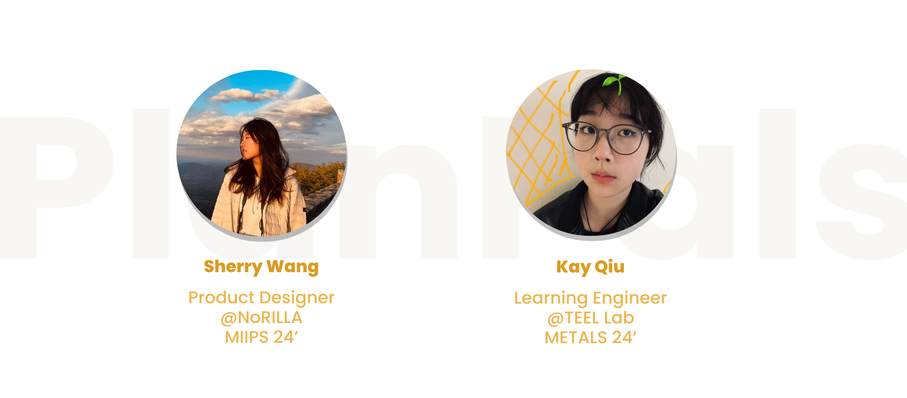更多作品
优医 (YUPI)
优医 (YUPI)是一个智能化的急诊服务集中平台，集成在智能手机、智能胸针、电脑桌面和智能显示器中，使医患互动比以往任何时候都更清晰、更高效。
Bumble遇见
Bumble 遇见（Vibely）引入交互式地图，促进基于实时地理位置的时效性互动，提升用户在线交友体验并增加转化率。
链单车（BikeLink Pro）
BikeLink Pro不只是半自动驾驶电动自行车，它代表着全新的骑行体验。我基于以人为本的设计原则，设计了一系列用户界面和交互范例。

宠星球（PetSphere）
宠星球是一个充满活力的宠物社区社交平台，帮用户连接爱宠人士和靠谱服务，打造毛孩子们的专属乐园。我是Petsphere的UI设计师和全栈开发人员，负责从界面设计到功能开发的整个流程。